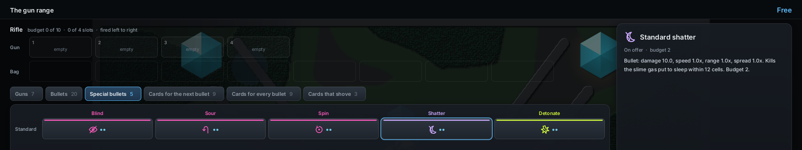

<title>Reader Bullets</title>
<meta name="claude:viewport-fit-sides" content="cover">
<link rel="stylesheet" href="https://fonts.googleapis.com/css2?family=Chakra+Petch:wght@600;700&family=IBM+Plex+Sans:wght@400;600&family=IBM+Plex+Mono:wght@400;500&display=swap">
<style>
/* One column; each reader's three paired clips in a row (one column on a phone), each with its counts under it in mono. Same system as the Mind page; the readers' accents are the paler violet of shatter and the acid green of detonate. */
:root{
  --bg:#eef0ee; --panel:#e0e4e1; --fg:#161a19; --muted:#56605c; --line:#c5cbc7;
  --sleep:#6a4fc4; --sick:#5c8a00; --crystal:#137f95;
  --display:"Chakra Petch","Segoe UI",system-ui,sans-serif;
  --body:"IBM Plex Sans","Segoe UI",system-ui,sans-serif;
  --mono:"IBM Plex Mono",ui-monospace,Consolas,monospace;
}
@media (prefers-color-scheme: dark){:root:not([data-theme="light"]){
  --bg:#101413; --panel:#1a201e; --fg:#e8ece9; --muted:#9aa5a0; --line:#2b3330;
  --sleep:#c7b4ff; --sick:#d4ff4a; --crystal:#5fd0e3; color-scheme:dark}}
:root[data-theme="dark"]{
  --bg:#101413; --panel:#1a201e; --fg:#e8ece9; --muted:#9aa5a0; --line:#2b3330;
  --sleep:#c7b4ff; --sick:#d4ff4a; --crystal:#5fd0e3; color-scheme:dark}
body{background:var(--bg);color:var(--fg);font:16.5px/1.55 var(--body);
  padding-left:max(16px,env(safe-area-inset-left,0px));padding-right:max(16px,env(safe-area-inset-right,0px));padding-block:28px 64px}
main{max-width:1180px;margin:0 auto;display:flex;flex-direction:column;gap:34px}
h1,h2,h3{font-family:var(--display);text-wrap:balance;line-height:1.12;margin:0;letter-spacing:.01em}
h1{font-size:2.5rem;font-weight:700}
h2{font-size:1.5rem;font-weight:700}
h3{font-size:1.1rem;font-weight:700}
p{margin:0;max-width:70ch}
section{display:flex;flex-direction:column;gap:14px}
.eyebrow{font:12px/1 var(--mono);letter-spacing:.1em;text-transform:uppercase;color:var(--muted)}
.lede{color:var(--muted);font-size:1.04rem;max-width:70ch}
ul{margin:0;padding-left:1.2em;display:flex;flex-direction:column;gap:8px;max-width:74ch}
li{min-width:0}
code{font:.86em var(--mono);background:var(--panel);padding:1px 4px;border-radius:3px}
.bar{display:flex;flex-wrap:wrap;gap:10px;align-items:center}
button{font:600 14px var(--body);color:var(--fg);background:var(--panel);border:1px solid var(--line);border-radius:6px;padding:7px 12px;cursor:pointer}
button[aria-pressed="true"]{background:var(--fg);color:var(--bg);border-color:var(--fg)}
button:focus-visible{outline:2px solid var(--crystal);outline-offset:2px}
.hint{font-size:.9rem;color:var(--muted)}
.trio{display:grid;grid-template-columns:repeat(3,1fr);gap:14px}
@media (max-width:900px){.trio{grid-template-columns:1fr}}
figure{margin:0;display:flex;flex-direction:column;gap:6px;min-width:0}
video{width:100%;max-width:100%;aspect-ratio:960/456;border-radius:6px;border:1px solid var(--line);background:#000;display:block}
img.still{width:100%;max-width:100%;border-radius:6px;border:1px solid var(--line);display:block}
.tag{font:500 12px/1 var(--mono);letter-spacing:.08em;text-transform:uppercase}
.sleep .tag,.sleep h2 .k{color:var(--sleep)}
.sick .tag,.sick h2 .k{color:var(--sick)}
figcaption{font-size:.92rem;color:var(--muted)}
.counts{font:12.5px/1.55 var(--mono);color:var(--fg);background:var(--panel);padding:7px 10px;border-radius:6px;overflow-x:auto;white-space:pre}
.short{background:var(--panel);border-radius:8px;padding:18px 20px;display:flex;flex-direction:column;gap:10px}
.wrap{overflow-x:auto;max-width:100%}
table{border-collapse:collapse;font:13px/1.45 var(--mono);min-width:560px}
th,td{padding:5px 10px;border-bottom:1px solid var(--line);text-align:right;white-space:nowrap}
th:first-child,td:first-child{text-align:left}
thead th{font:600 12px var(--body);color:var(--muted)}
tbody tr:last-child td{border-bottom:none}
.note{border-left:3px solid var(--sick);padding:4px 0 4px 14px}
footer{font-size:.85rem;color:var(--muted)}
</style>
<main>
<header style="display:flex;flex-direction:column;gap:10px">
  <span class="eyebrow">Larder World · guns · step D · 2026-11-17</span>
  <h1>Reader bullets</h1>
  <p class="lede">The second bullet family of the gun-card plan: bullets that pay off another card's work. A reader kills only the slime in the state it reads, within its reach, so on its own it does nothing more than a plain hit. Shatter reads sleep from gas; Detonate reads the germ's sickness. Both run on the CPU and the GPU and match exactly.</p>
</header>

<div class="bar">
  <button id="slow" type="button" aria-pressed="false">Slow motion ×½</button>
  <span class="hint">Each clip loops, 10 s of game time from 19.9 s (the two germ clips 20 s, to 40 s). All six are the same game on the Fork up to the first cast, on the same spot of a thick lobe.</span>
</div>

<section class="sleep">
  <h2><span class="k">Shatter</span>: kills the slime gas put to sleep</h2>
  <p>Gas at 20 s puts the lobe to sleep (grey). A shatter at 23 s takes every sleeper within 12 cells at once. Alone, with nothing asleep, it takes none.</p>
  <div class="trio">
    <figure><span class="tag">Gas alone</span><video src="gas.mp4" autoplay muted loop playsinline></video>
      <div class="counts">gas at 20 s: 1,055 asleep
walkers within 12 cells
  293 at 20 s · 293 at 24 s · 293 at 30 s
from 12 to 24 cells
  755 · 759 · 762
killed by the casts 0
slime at 30 s 24,766</div></figure>
    <figure><span class="tag">Gas, then shatter</span><video src="gas-shatter.mp4" autoplay muted loop playsinline></video>
      <div class="counts">gas at 20 s, shatter at 23 s
walkers within 12 cells
  293 at 20 s · 0 at 24 s · 0 at 30 s
from 12 to 24 cells
  755 · 3 · 3
killed by the shatter 1,062
slime at 30 s 23,710</div></figure>
    <figure><span class="tag">Shatter alone</span><video src="shatter.mp4" autoplay muted loop playsinline></video>
      <div class="counts">shatter at 23 s
walkers within 12 cells
  293 at 20 s · 289 at 24 s · 301 at 30 s
from 12 to 24 cells
  755 · 773 · 750
killed by the shatter 0
slime at 30 s 24,773</div></figure>
  </div>
  <p class="hint">The hole stays open to the end: the gas cloud lingers, and slime that walks in falls asleep at its rim.</p>
</section>

<section class="sick">
  <h2><span class="k">Detonate</span>: kills the sick slime</h2>
  <p>A germ at 20 s infects the lobe (red), and the sickness spreads through the body. A detonate at 22 s takes every sick walker within 24 cells at once. Alone, with no one sick, it takes none.</p>
  <p class="hint">Re-filmed on 11-17 after a bug fix: the first germ clips carried a second germ that a GPU bug planted at the map's middle, so the germ looked like a plague. These two run to 40 s, because the germ starves its sick 12 to 18 s after the cast.</p>
  <div class="trio">
    <figure><span class="tag">Germ alone</span><video src="germ.mp4" autoplay muted loop playsinline></video>
      <div class="counts">germ at 20 s
walkers within 12 cells
  293 at 20 s · 301 at 30 s
  156 at 34 s · 0 at 40 s
sick within 24 cells
  780 at 22 s · 1,067 at 24 s · 0 at 30 s
killed by the cast 0 (the sick starve)
slime at 30 s 24,772 · at 40 s 17,628
(none cast: 25,772 at 40 s)</div></figure>
    <figure><span class="tag">Germ, then detonate</span><video src="germ-detonate.mp4" autoplay muted loop playsinline></video>
      <div class="counts">germ at 20 s, detonate at 22 s
walkers within 12 cells
  293 at 20 s · 23 at 24 s
  68 at 30 s · 0 at 36 s
sick within 24 cells
  780 at 22 s · 79 at 24 s · 526 at 30 s
killed by the detonate 780
slime at 30 s 23,996 · at 40 s 19,590</div></figure>
    <figure><span class="tag">Detonate alone</span><video src="detonate.mp4" autoplay muted loop playsinline></video>
      <div class="counts">detonate at 22 s
walkers within 12 cells
  293 at 20 s · 289 at 24 s · 301 at 30 s
from 12 to 24 cells
  755 · 773 · 750
killed by the detonate 0
slime at 30 s 24,773</div></figure>
  </div>
  <p class="note">The germ alone kills nothing for 12 s; then the lobe thins to a net and is gone by 38 s, and the body is 31.6% smaller at 40 s. A detonate 2 s in pops the 780 sick at once and opens a hole, but the wave carries on from its rim, and by 40 s the body is larger than with the germ alone (19,590 against 17,628): an early detonate kills the germ's carriers before they pass it on. One clip, seed 0.</p>
</section>

<section>
  <h2>In play: paired 10 s windows</h2>
  <p>Fifteen windows from the seek report's scenes (greedy squads, the Fork's thick front held, five planet maps with guarding or squad-mode hands). Each plays one game to a time T; then every squad loads a deck and fights for 10 s. In each pair the setter fires on the same beat and only the second card differs: a plain bullet, or the reader.</p>
  <div class="wrap"><table>
    <thead><tr><th>Pair</th><th>Windows with a reader cast</th><th>Kills, all 15</th><th>Paired: more kills</th><th>Slime at the ends</th><th>Paired: less slime</th></tr></thead>
    <tbody>
      <tr><td>gas+plain / gas+shatter</td><td>4 of 15 (31 casts)</td><td>1,098 / 2,135</td><td>4 of 4 (p 0.125)</td><td>378,775 / 377,807</td><td>3, 0 more (p 0.25)</td></tr>
      <tr><td>germ+plain / germ+detonate, re-run 11-17 on the fixed build</td><td>15 of 15 (186 casts)</td><td>1,076 / 1,689</td><td>12, 2 fewer (p 0.013)</td><td>378,559 / 378,248</td><td>13, 1 more (p 0.002)</td></tr>
    </tbody>
  </table></div>
  <ul>
    <li><b>Shatter pays when it is cast, and it seldom is in 10 s.</b> Squads that guard fire few rounds, so in 10 of 14 windows the gun never reached its second card. Where it did, kills rose every time: the held thick front at 30 s went from 858 to 1,746 kills, its slime from 24,507 to 23,672. In one window its cast read nothing, because the squad's own shots had woken the gassed slime.</li>
    <li><b>Detonate leaves less slime at the window's end in 13 of 15 windows</b> (1 more, 1 tied; p 0.002, which survives correcting for the four tests) and kills more in 12 (p 0.013, just short). In 10 s the germ's own starving has not landed yet, so the detonate's kills are most of what shows: germ+plain left about what gas+plain did (378,559 against 378,775).</li>
    <li><b>The first run, with the bug, is withdrawn.</b> Its planted germ made germ+plain leave 7,700 to 18,500 walkers on 8 planet windows, and Detonate no less slime.</li>
  </ul>
</section>

<section>
  <h2>In the game</h2>
  <p>Two new bullets, each 2 of the gun's budget. Shatter is sold from planet 2 (gas is sold from the start); Detonate with the germ from planet 4. The armory's Mind tab now holds both families as "Special bullets".</p>
  <figure>
    <figcaption>The armory at 1920×1080: Shatter (a crescent moon split by a crack), Detonate (a blast round the germ's spots).</figcaption></figure>
</section>

<section class="short">
  <h2>Not settled</h2>
  <ul>
    <li><b>Two in one shot.</b> Multicast with gas and shatter gasses and shatters in the same shot: a kill as wide as the gas for 8 of a gun's 10 budget, where a blast is 6 cells for 3. A shatter that reads only sleep older than a second would close it.</li>
    <li><b>Gunfire wakes the gassed,</b> so the squad's own shots between a gas and a shatter can wake what the shatter would read. <code>Quiet</code> keeps them asleep.</li>
    <li><b>When to detonate.</b> Two seconds after the germ it cuts the wave short over 20 s; whether "detonate late" is the card's lesson or a tuning note is the game designer's call. The germ is retuned per planet on the route page.</li>
    <li><b>The 1070's frame cost is booked.</b> Nothing runs each step; each reader hit is one pass over the walkers and its kill count rides the frame's one read-back.</li>
    <li>The numbers are first guesses: reach 12 and 24 cells, cost 2. <code>set=read_r=…</code> and <code>detonate_r</code> change them.</li>
  </ul>
</section>

<footer>Source, clips and counts: <code>Reports/gun-readers-2026-11-17/</code> in the repo. Clips by <code>raw/film.sh</code> and <code>raw/make_clips.py</code>, windows by <code>raw/windows.sh</code> (the germ pair's re-run in <code>raw/windows-germ.txt</code>).</footer>
</main>
<script>
(function(){
  var b=document.getElementById('slow');
  function set(on){
    b.setAttribute('aria-pressed',on?'true':'false');
    document.querySelectorAll('video').forEach(function(v){v.playbackRate=on?0.5:1;});
  }
  b.addEventListener('click',function(){set(b.getAttribute('aria-pressed')!=='true');});
})();
</script>
